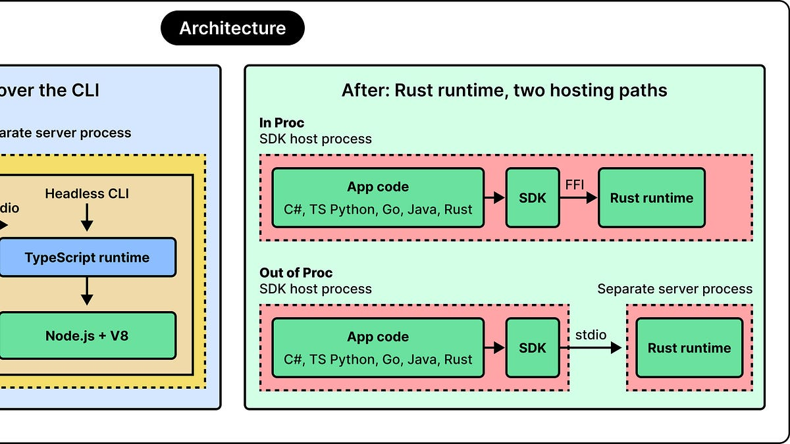
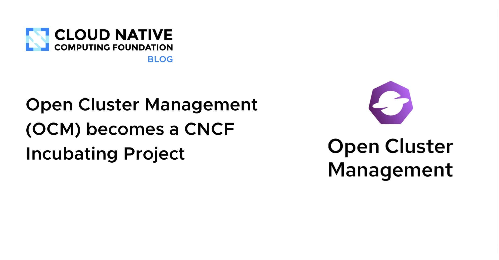
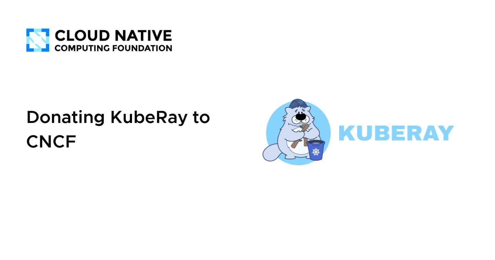
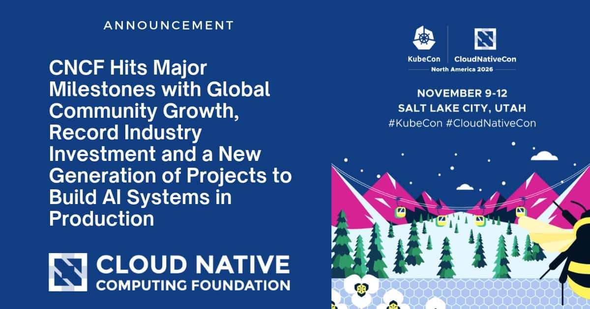
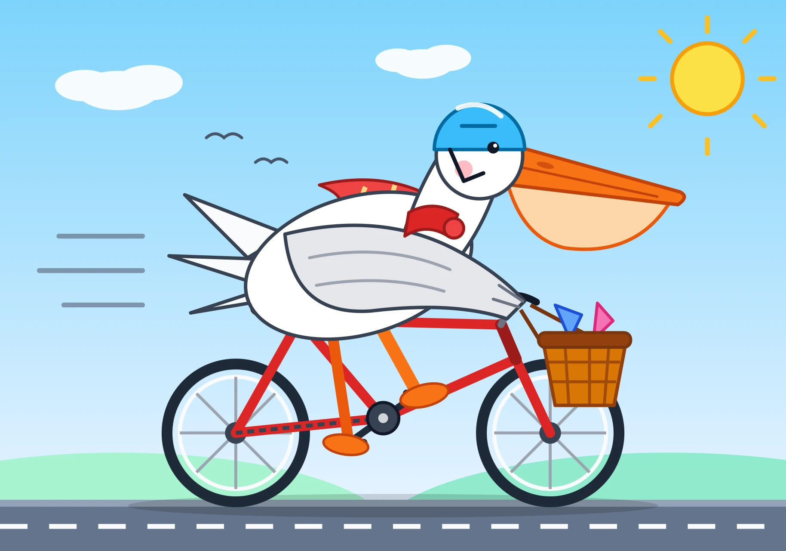
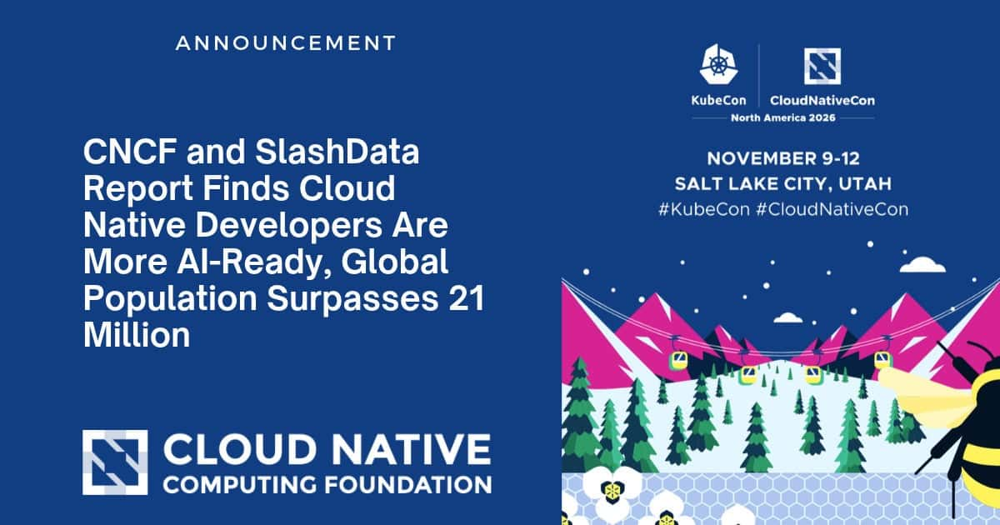
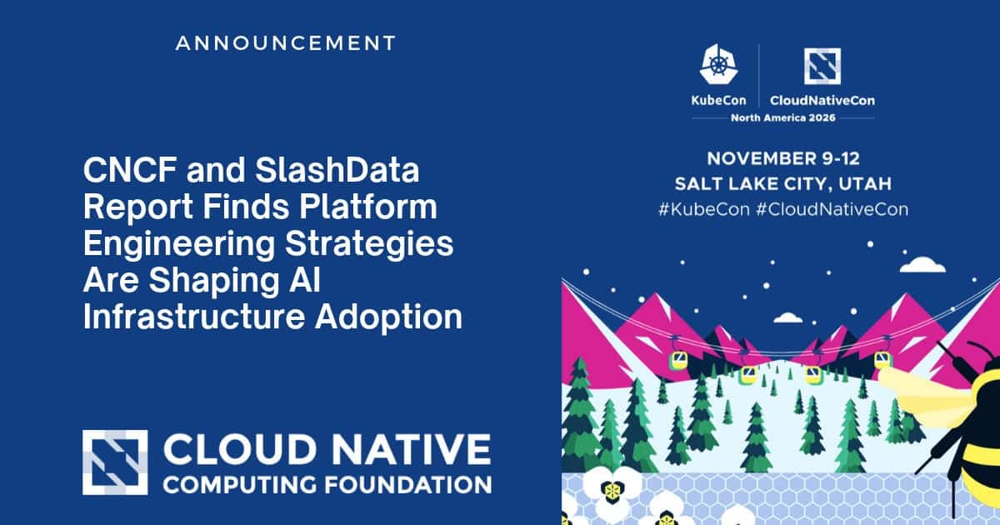
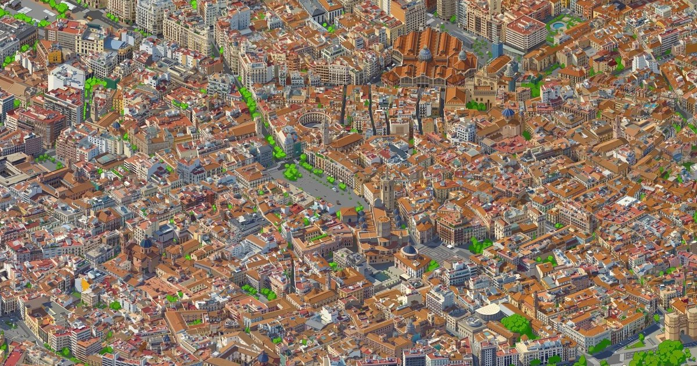
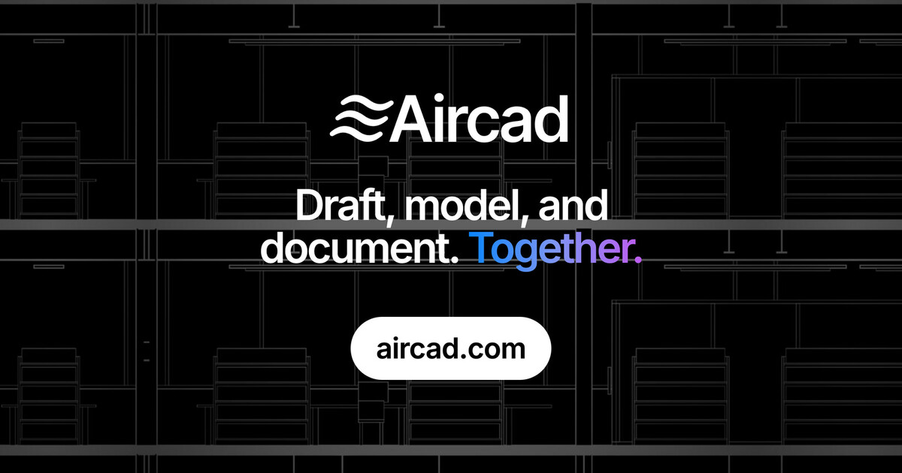

🔥 Top 3 (must read)
Git security vulnerabilities announced
Git released updates that fix six security bugs. The bugs affect recursive clones, reference handling, merges, binary patches and imports. Why it matters: every laptop, CI runner and build image on your team uses Git. Plan an upgrade this week, and start with CI machines that clone outside repos.
Get your coding agent off ~2019 JavaScript, onto modern web primitives
(HN discussion) Google Chrome published guidance that you give to a coding agent so it uses modern web platform features instead of old JavaScript patterns. It is popular on HN, with 274 points and 83 comments. Why it matters: your team writes TypeScript/React with AI help. This is an easy way to stop agents from adding old-style code to your frontends.

How GitHub Used AI to Port Copilot From TypeScript to Rust in Record Time
ByteByteGo explains how GitHub used AI to move Copilot's code from TypeScript to Rust. It also shares what the team learned along the way. Why it matters: this is a real case study of AI doing a large migration. It is useful to read before you plan a big refactor or rewrite with agents.

🛠 Tools & releases
Open Cluster Management becomes a CNCF Incubating project
: open source tool to manage many Kubernetes clusters across cloud and on-premises.

KubeRay donated to CNCF
: the bridge for running Ray AI workloads on Kubernetes now lives under CNCF.

CNCF adds new Sandbox projects, including Agent Substrate and OpenShell
: new projects aimed at running AI systems in production. CNCF now has 231 projects.

🤖 AI for developers
Prompting Claude Fable 5.2: say who owns the code
: Anthropic's guide says Fable 5.2 reacts to what the prompt says about who owns the code. If the prompt is silent, or says the code belongs to someone else, the model tends to add to the existing structure, even when that repeats existing code.
S
Meta launches Muse Ember
: a small, cheap model for repeated agent work, like tool calls, coding subtasks, routing and extraction. It competes with the Claude Haiku / GPT Luna tier.

llm-gemini 0.36 adds Gemini 4 Carbon
: Gemini 4 Carbon is now open to everyone, not only cyber defenders. You can call it from the
llm CLI.Apple has a new Mac app coming for running local AI models
(HN): it could make local models simpler to use on dev Macs.

👔 Engineering & teams
Nobody owns the twelve AI tools your departments already built
: a Wharton survey of 1,007 managers found that most companies check AI agents' work. Far fewer know who is responsible when an agent gets something wrong.
CNCF/SlashData: 75% of cloud native developers use AI coding tools
: the number is 55% for developers outside cloud native. Useful data for team AI-adoption talks.

CNCF/SlashData: platform engineering shapes AI infra adoption
: 54% of developers with independently managed tooling use hybrid setups for AI work. At companies with a custom internal platform, it is only 5%.

🎯 For me
Modern web guidance for agents (Top 3): a direct fit for your TypeScript/React work with coding agents.
Copilot TS→Rust port case study (Top 3): it covers both sides of your role, AI-driven delivery for the engineer and "how teams adopt AI" for the EM.
Fable 5.2 code-ownership prompting: a small prompt change that can affect the quality of agent refactors in your repos.
AI ownership gap article: a good starting point for an EM talk about who owns agent mistakes on your team.
No Flutter or automation-testing news today.
💡 App ideas & indie builds
Tiny Valencia
(HN): Valencia, Spain shown as a SimCity-style isometric city. Problem: normal maps are flat and not much fun to explore. Inspiration: you can turn real map data into a playful, game-like view. The idea could work for any city or campus.

HolyArrs
(HN): a 15 MB self-hosted app that gives your home media server a Netflix-style and Spotify-style experience. Problem: media server tools are often heavy. People want one light app for both video and music. Inspiration: 131 comments show strong interest in small apps that replace heavy tools.
Aircad
(HN): professional drafting and 3D modeling that runs in the browser. Problem: CAD usually means installing large, expensive desktop software. Inspiration: you can move a "desktop-only" professional tool to the web.

🎓 Try this
Add Google Chrome's modern-web-guidance to your coding agent's context, for example in your CLAUDE.md or Copilot instructions. Then ask the agent to build one small React component. Compare the code with and without the guidance.